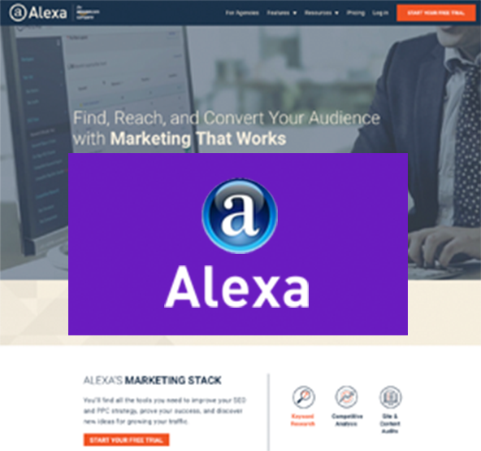
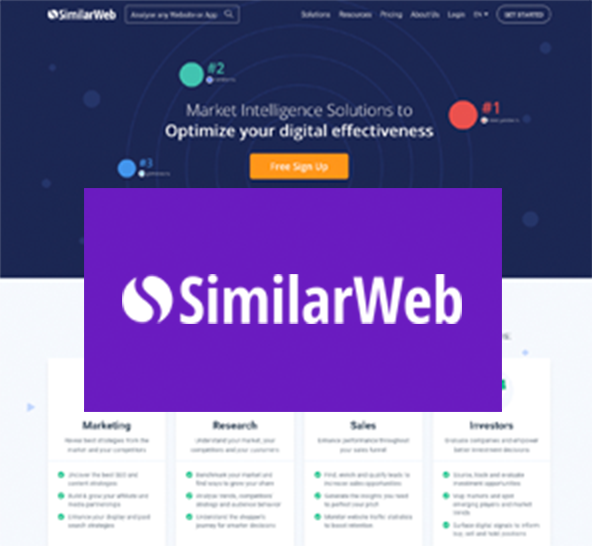
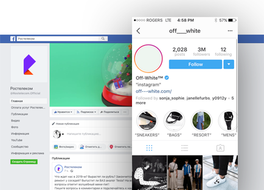
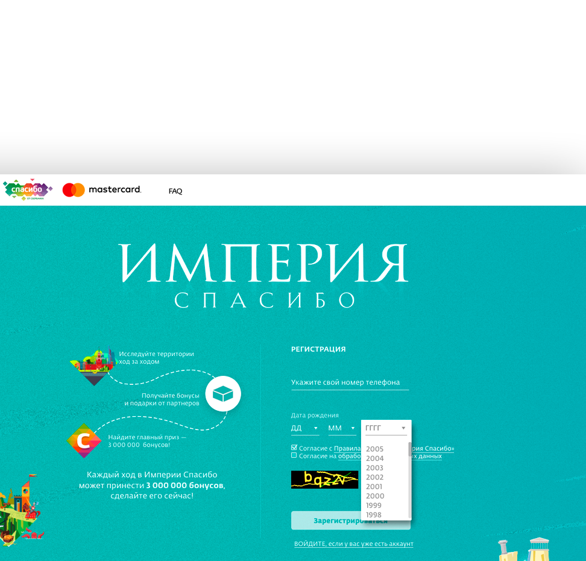
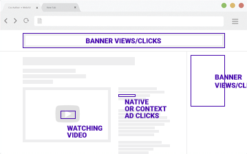

поисковики и социальные
сети + мобильный
трафик
traffshop
Заказать трафикбыстрая связь
Трафик из любых источников
Мы готовы поставить трафик с любыми необходимыми источниками (поиск, новостные порталы, соц.сети, баннерные сети, популярные площадки...).
Весь трафик отлично подходит для google analytics, yandex metrica и других систем статистики и аналитики. Также прекрасно виден в рейтингах similarweb.com и alexa.com.
Эту услугу еще называют накрутка трафика. Помимо обычного мы поставляем мобильный трафик.
Клики по баннерам и спецпредложениям
Заказать клики по баннерам и/или спец.предложениям можно у нас с любым необходимым CTR и поведением на сайте клиента. Характеристики могут быть любыми: движения мышью, время на сайте, процент отказов и прочее.
Клики подходят для систем Adriver, Adfox, DoubleClick, Sizmek и схожих баннерных систем. Также возможны клики по кнопкам share социальных сетей на сайтах.
Просмотры видео роликов
Накрутка просмотров видео (в том числе рекламы поставляемой через VAST объекты) — одна из наших услуг. Можем гарантировать качество и характеристики просмотров.
Накрутка поисковых подсказок
Ваш сайт или название компании в поисковых подсказках. Услуга: накрутка поисковых подсказок Яндекс.
Дополнительные услуги —
Хотите чтоб ваш трафик был виден рекламодателям. Подключите независимые рейтинги similarweb и alexa.
Любые необходимые характеристики ГЕО, пропорции SEO / Social, время на сайте.
Любые необходимые характеристики ГЕО, пропорции SEO / Social, время на сайте.


Накрутка действий в социальных сетях. Лайки/шеры/коменты/просмотры.
Увеличение подписчиков telegram и instargam
Увеличение подписчиков telegram и instargam

Любые сложные механики (прохождение опросов, регистрации на сайтах, шеринг постов, участние в конкурсах и играх.
Также мы предлагаем установки приложений Android (Play Market) и iOS (AppStore)
Также мы предлагаем установки приложений Android (Play Market) и iOS (AppStore)


#накрутка_трафика
#клики_по_баннерам
#накрутка_статистики
#трафик_adriver
#трафик_для_adfox
#накрутка_просмотров_баннеров
#трафик_из_соцсетей
#накрутка_кликов
#накрутка_sizmek
#переходы_по_баннерам
#накрутка_youtube
#накрутка_просмотров_видео
#просмотры_видео
#накрутка_поисковых_подсказок
#накрутка_подсказок_яндекс
#просмотры_vast-объектов
#накрутка_просмотров_vast
#накрутка_прероллов
#накрутка_переходов
#трафик_для_просмотров
#накрутка_dcm
#накрутка_doubleclick
#клики_по_doubleclick
#накрутка_счетчика_google_analytics
#накрутка_счетчика_яндекс_метрика
#накрутка_статистики_liveinternet
#накрутка_adfox
#клики_dcm
#трафик
#накрутка_adriver
Современные рекламодатели ориентируются на такие показатели площадки, как количество трафика и его характеристики (длительность на сайте, процент трафика из поиска и соц.сетей...) эти данные берутся из similarweb/alexa/g.analytics, а для кого-то важны клики/ctr и качество переходов по рекламе (время на сайте, отказы...)
Со всем этим и многим другим мы поможем вам!
Мы страхуем —
Агенства от невыполнения KPI, а площадки от неудачного SEO и/или сезонного спада посещаемости...
Агенства от невыполнения KPI, а площадки от неудачного SEO и/или сезонного спада посещаемости...
Любые источники трафика:
соцсети, поисковики или любые другие
Любое необходимое
поведение на сайте
поведение на сайте

this
is
not
for
is
not
for